이 시집에는 이재선 목사가 2011년 6월부터 2012년 8월까지 쓴 자아성찰시 24편을 담았습니다.
광은기도원의 산 공기와 소나무, 벚꽃 아래의 어울림, 아내와 나와 길을 돌아보며 나를 묻고 답한 시들입니다.
시는 쓴 날짜 순서로 엮었고, 시마다 끝에 언제 어디서 썼는지를 적은 지은이의 메모를 그대로 두었습니다. 시마다 한 쪽씩, 시의 분위기에 맞춘 색의 추상화를 곁들였습니다.
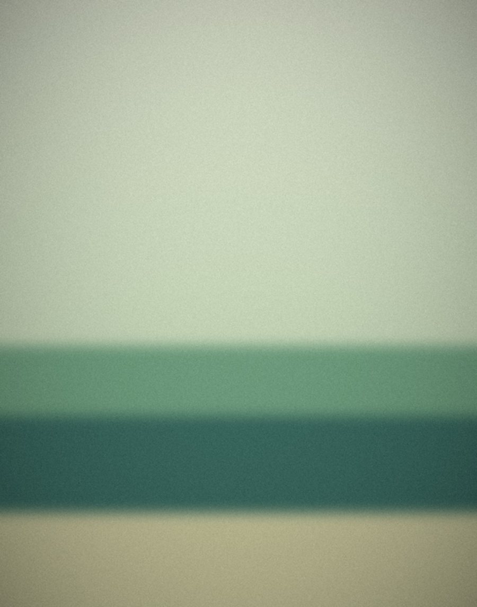
비움의 테라스
1,200년 전 현인(최치원, 신라의 지성)의 깊은 글에 심취하여 눈가에 아른 거리는 파리의 요란함도 전기톱의 나무 가르는 소리도 끄억 끄억 깨어 지르는 새 소리도 글 맛에 흠뻑 젖어 나올 줄 모르는 나를 밥 먹으라고 설정해 논 알람 소리가 내 영을 흐트러 놓는구나 아! 먹어야 사는구나! 아! 먹어야 읽는구나! 아! 먹어야 쓰는구나!
2011년 6월 11일(토) 필그림 하우스의 Terrace of Kenosis(비움의 테라스)에서
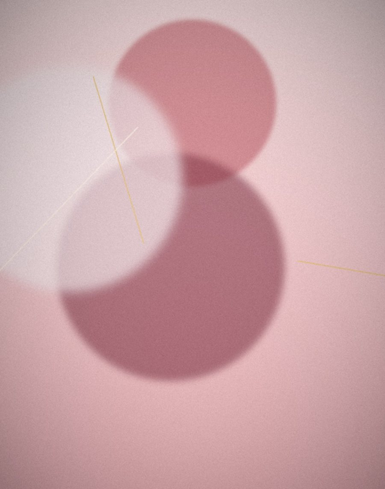
아내
내 아내는 이래서 좋다 나를 사랑한다 나에게 맞춘다 믿어준다 해결사다 용감하다 영적이다 옆에 있어서 좋다 나를 기대한다 이젠 잔소리도 좋다 아내의 소리는 교향곡이 되었다 내 아내는 다 좋다 그냥 좋다 아내가 보고 싶다
2011년 6월 19일(주일)
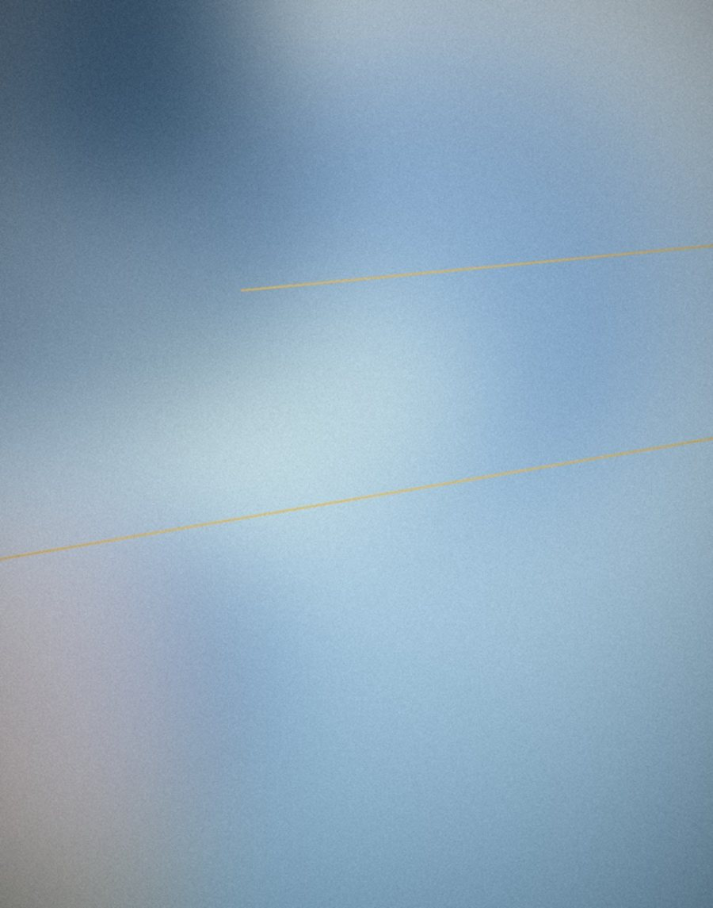
흥망성쇠(興亡盛衰)
솔 나무에 새순이 돋았다. 연푸른 솔 곧게 세우고 젊음을 뽐낸다.
연푸르게 곧게 선 솔 검푸른 솔 되어 이내 처지네
검푸르게 처진 솔 흙빛 되어 땅에 누웠네
땅에 누운 흙 솔 기꺼이 내 너희의 푸르름의 거름되리라!
2011년 6월 23일(목)
광은 기도원에서 안식월을 보내며 솔잎의 피고 지는 모습을 보며 적어 보았다.
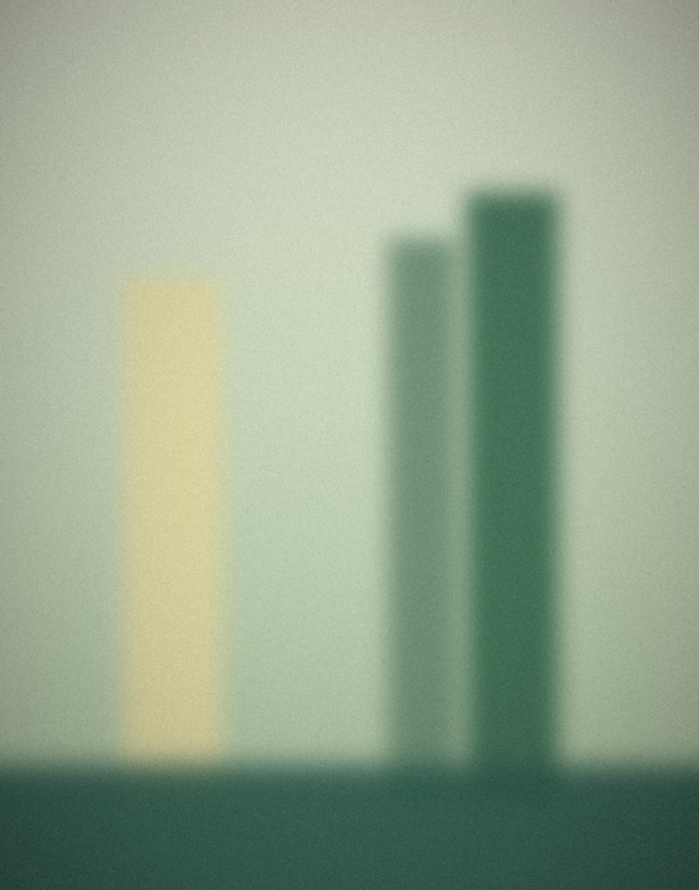
키가 큰 소나무
큰 키의 소나무 너는 대장부 너 뭐 그리 잘났다고 높이 서있노 너 뭐 그리 많이 안다고 손들고 있노 너 뭐 그리 잘한다고 얼굴 내미노
잘나서 그런 게 아니라네 내 먼저 알았기에 바람 맞고 내 먼저 체험했기에 때양볕 쬐고 내 먼저 받았기에 나눠주러 가는 중이라오
남 몰라줘도 나는 일어서리 남 흉보아도 나 말하리 남 비난해도 나 전하리
키 큰 소나무 너는 대장부 나도 너처럼 대장부되리!
2011년 6월 23일(목)
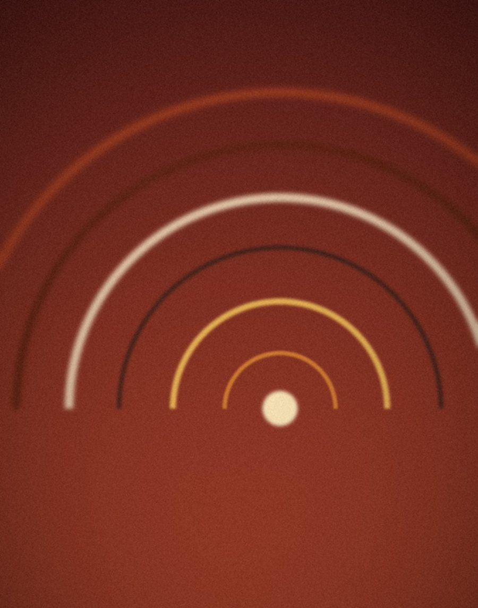
맑음
광은기도원의 산 공기 참 맑다 한 점의 오염 없는 산 공기 한 포대 들이키니 시원하다 손으로 퍼 마시니 거침없이 들어 온다 아무리 마셔도 부담이 없다 더 마시고 싶다 또 마시고 싶다 다 마시고 싶다
맑은 공기이고 싶다 맑은 설교를 하고 싶다 오염되지 않은 설교 물들지 않은 설교 마시면 건강해 지고 들이키면 소생케 되고 먹으면 행복해지고 들어가면 사명자가 되는 그런 맑은 설교자가 되고 싶다 그런 목사가 되어야 한다
2011년 6월 23일(목)
광은기도원에서 안식월을 보내며 비 온 후 개인 하늘을 보며 적어 보았다.
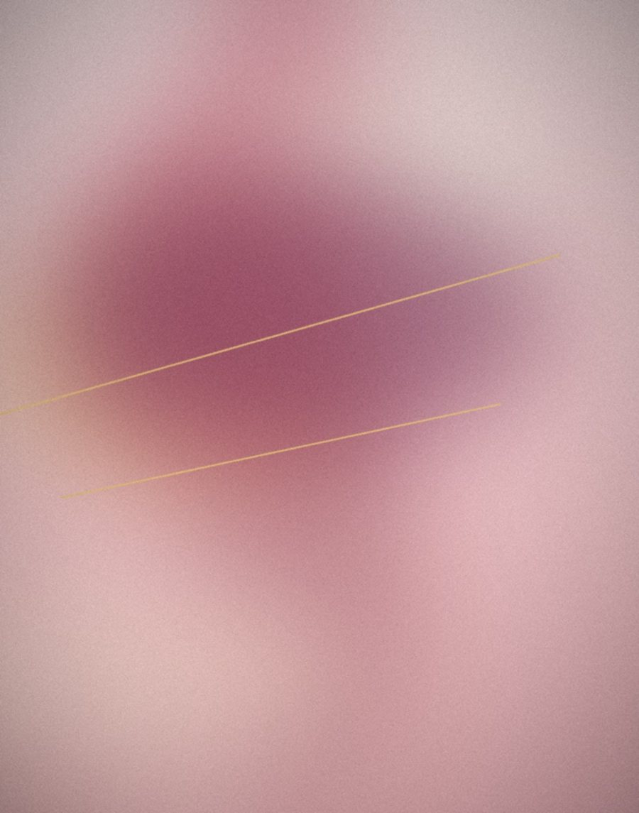
미 인
오똑선 코 계란형 얼굴 붉은 입술 깡마른 팔뚝 부실한 다리 15센티 하이 힐 잘 살 수 있을까? 남이 바라는 미인
자연스런 얼굴 가냘프게 찢어진 동양미인 눈 두툼한 입술 튼튼한 팔뚝 편안한 신발 건장한 다리 평생 나그네 인생 걸어도 문제 없을 다리 하나 밖에 없는 나 내가 바라는 미인 세상의 마음 속 미인
2011년 7월 14일(목)
저자가 차를 타고 지나가다가 아파트 광고 모델로 걸려있는 연예인의 사진을 보고 미인이라는 느낌보다 약간 측은지심을 느끼게 되어 적었다.
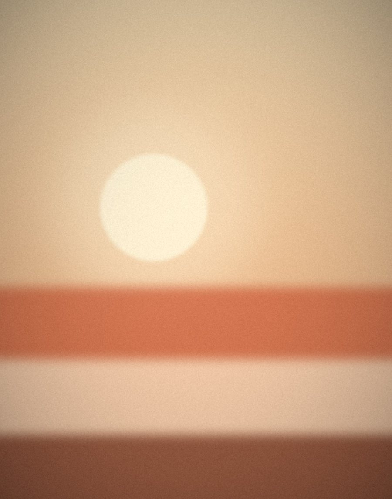
내 길
자전거 길 내 길 아니네 사람 걷는 길 내 길이네
금관 길 내길 아니리 이 길이 내 길이네
조명 길 나 갈 곳 아니네 이 길이 내 꼭 가야하네
붉은 길 나 못 가네 이 길 이내 갈 수 있네
나의 길을 가련다 생명 소생의 길을 가련다
2011년 8월 8일(월)
집 앞 산책로를 걷다가 문득 두 길이 있음을 보면서 내가 걸어야 할 길이 있음을 느끼며 적었다.
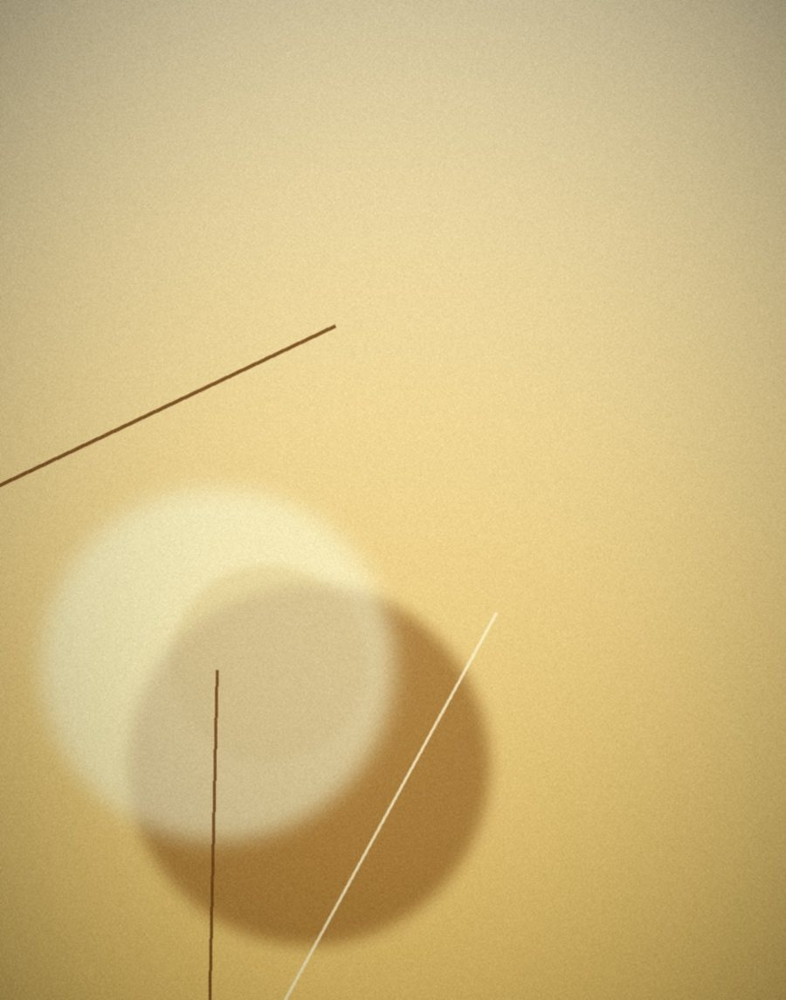
구름에 몸 가듯
구름이 간다 달이 간다
구름이 간다 내가 간다
세월이 간다 인생이 간다
시간이 간다 사랑이 간다
역사가 간다 문화가 간다
구름이 가고 내가 머물러 있듯
주님 영원히 계시고 주님과 영원히 살리
2011년 8월 8일(월)
집 앞 산책로를 밤에 산책하다가 하늘을 보니 달이 밝고 구름이 지나는 모습에 나이가 들면서 세월이 점점 빨리 흘러감을 회상하였다.
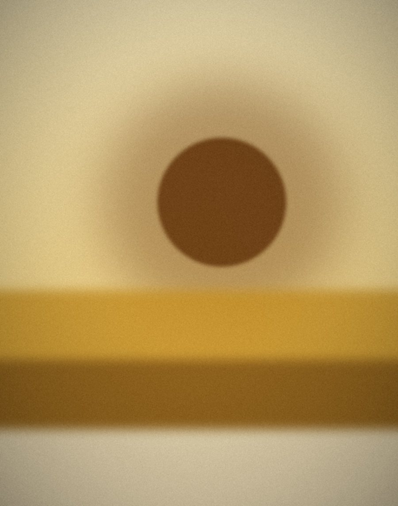
빛
세상이 밝다 너무 밝다 거리를 비추는 가로등 아파트 비추는 간접조명 형형색색 광고등 편의점의 실내등까지
너무 밝아 많은 할 일들 너무 밝아 보이지 않는 것들 사람이 보이지 않고 다 보여 보이지 않고 세밀히 보니 보이지 않는 큰 그림 자세히 비추니 볼 수 없는 어두움들
강렬한 빛 속에 어두운 세상 마음이 보이지 않고 세상이 어둡다 희미해지는 사랑 불 꺼진 긍휼의 방 밝히자 마음의 불을
2011년 8월 8일(월)
길을 걷다가 곳곳에 너무 밝은 빛을 보며 막상 보지 못하고 있는 어두운 곳이 있음을 생각하며 적었다.
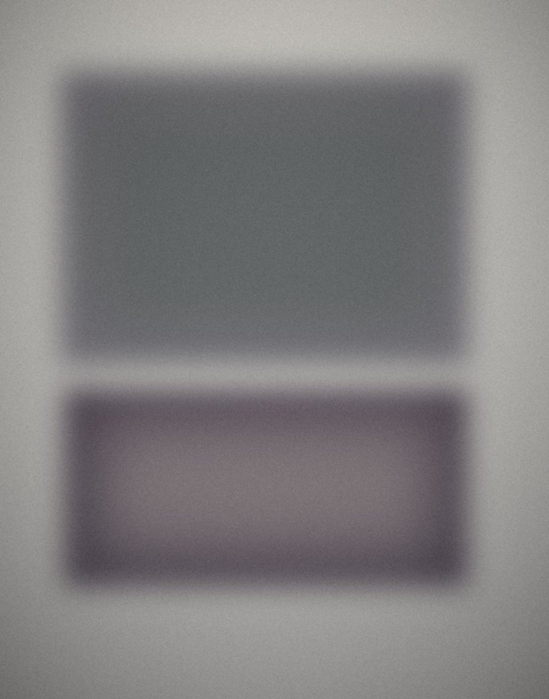
장 승
장승 둘이 서 있네 천하대장군 지하여장군 장승 둘이 앞만 보네 니들은 왜 마주보지 않니
요즘 잠이 안와 성도가 떠났어 교회 재정이 어려워 아들이 중병이래요 시골 목회 고독해요 앞만 보고 쏟아내는 아픔들
모두들 앞만 보네 마주 보지 않네 마음을 보지 않네 모두들 나만 아프다네 내가 아픈 만큼 남도 아프건만
2011년 9월 8일(목)
서부시찰 목사님들과 찜질방에서 교제하면서 서로의 아픔을 쏟아내는 사연들을 들으면서 적어 보았다.
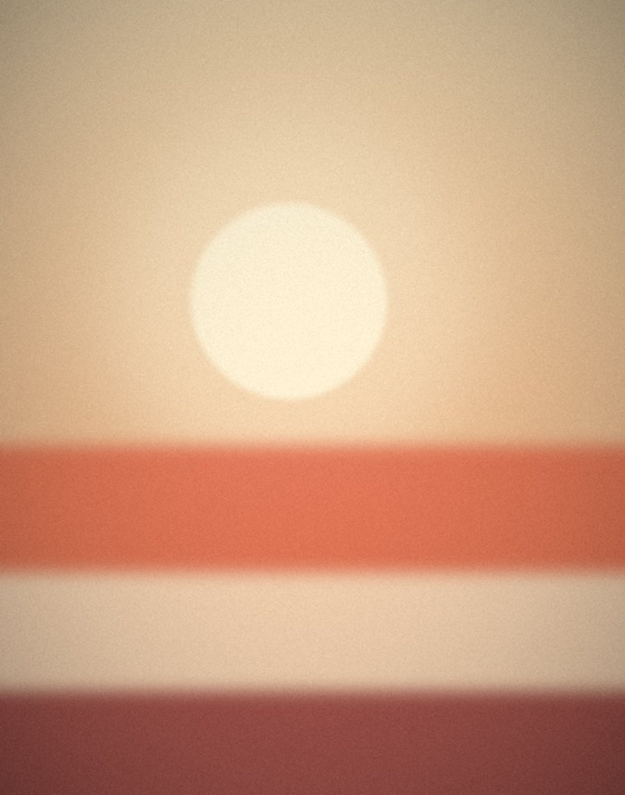
시작(詩作)하다
시, 50이 되니 시가 스물스물 삐져나온다. 오 천 시간 생각해야 나오는 시 오랜 장맛 으뜸이듯 思泉에서만 솟아낼 수 있는 시
시, 생의 길을 올곧게 하고 중생들의 삶의 사표를 그려 보이고 세속의 사오(思誤)들의 세척제 왜? 라고 묻게 하고 성현의 삶의 도킹 궤도수정시스템
시, 心泉에 맺힌다 내 삶의 퍼지는 향기 펜촉 따라 흐르니 내 인생 명화(名畵)되네 시 한 조각 놓여 지니 인생 퍼즐 맞춰 진다 시 한 방울 떨어지니 맛깔 나는 나의 삶
2012년 1월 5일(목)
2012년 1월 5일(목) 동산교회 수지수양관 기도 중에 성학집요의 수기 상편을 읽고 적어본다.
긴 머리 짧은 머리 큰 눈동자 초생달 눈 말하는 재미 듣는 재미 도란도란 말놀음 하는 인꽃이 더 곱네
벚나무 포플러의 어울림보다 꽃과 나무가 배경되어 웃음 꽃 피우는 사람들의 어울림 흠 없는 조화
2012년 4월 24일(화) 리더들과 함께 단합대회를 에버랜드 옆 호암 미술관에 갔다가 벚꽃의 만개를 배경으로 하여 대화하는 학생들의 모습을 보면서 아름다운 어울림을 표현해 보았다.
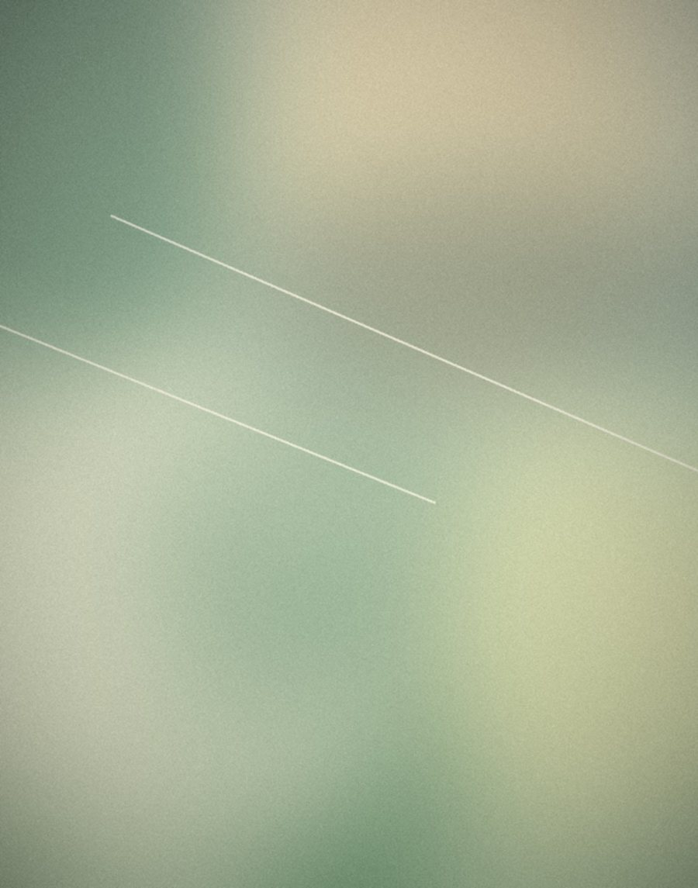
어울림2
삐쭉빼쭉 삐져나온 벚나무 꽃 사이사이 배경되어준 플러터너스 꽃보다 더 아름다운 어울림
어울린 꽃구경하는 사람들의 사랑 나눔 사랑하는 사람들과 또 다른 생명들의 어울림
2012년 4월 24일(화) 리더들과 함께 단합대회를 에버랜드 옆 호암 미술관에 갔다가 벚꽃의 만개를 배경으로 하여 대화하는 학생들의 모습을 보면서 아름다운 어울림을 표현해 보았다.
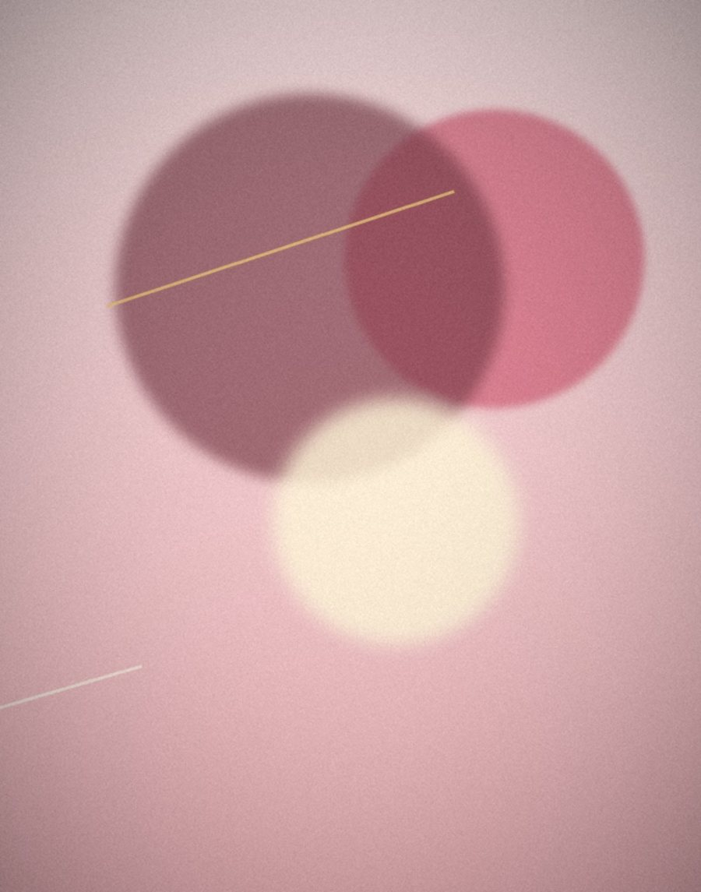
어울림 1
연순한 흰빛 수줍은 분홍색의 화사한 벚꽃 꽃 자랑 하며 삐쭉빼쭉 삐져나온 벚나무 꽃 가지 사사이사이 배경되어준 플라터너스의 연푸름 꽃보다 더 아름다운 어울림
어울린 꽃구경하는 사람들의 사랑 나눔 정겨운 사람들의 사랑나눔 자연들의 어우러짐과 사랑하는 사람들의 또 다른 생명들의 어울림
2012년 4월 24일(화) 리더들과 함께 단합대회를 에버랜드 옆 호암 미술관에 갔다가 벛꽃의 만개를 배경으로 하여 대화하는 학생들의 모습을 보면서 아름다운 어울림을 표현해 보았다.
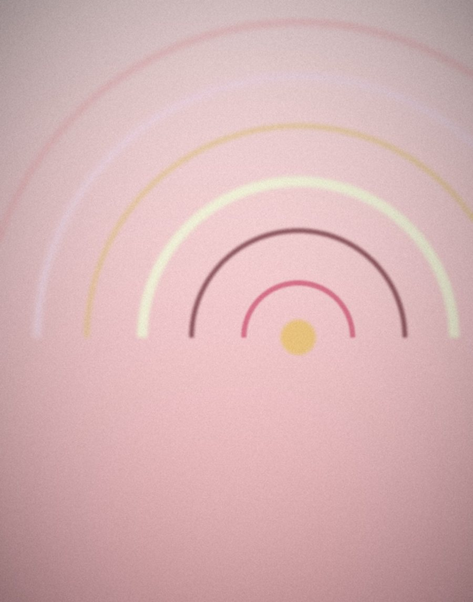
카네이션 훈장
♬연분홍 치마가 봄바람에 휘날리더라♬ 옛 노래에 흥어림 지난 수 십년 세월 스치누나 일제치하, 6.25 동란 애간장 녹는 시간들의 연속 모진 세월 잘도 견뎠구나 남은 건 백발, 검버섯, 굽은 허리 아! 무상한 세월아 내 청춘 돌려다오
♬오늘도 옷고름 씹어가며 산제비 넘나드는 성황당 길에♬ 회한의 세월 억울하련만 일가를 이룬 두 딸과 아들 옛 노래가 되감은 세월 깨진 유리처럼 흩어진 나날 또렷한 피땀의 열매 계순아! 용썼다 카네이션 훈장 하사하노라
2012년 5월 28일(월) 큰 딸 생일날 방에서 장모님께서 백설히 씨의 “봄날은 간다” 옛노래를 들으시면서 지난 날의 회상에 젖어 있는 모습을 보면서 적어 보았다.
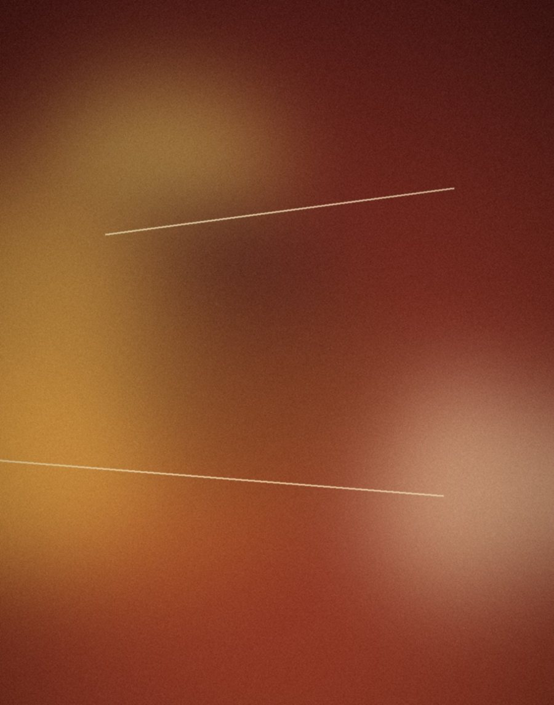
맛
사람이 좋으니 음식이 맛있고
풍광이 아름다우니 사람이 사랑스러워지누나
맛갈나는 음식 품격 있는 내 인생으로 세상을 맛내볼까?
2012년 7월 30일(월) 하명수선교사 부부와 남양주 깊은 산 속 식당에서 밥을 먹고 적어 보았다.
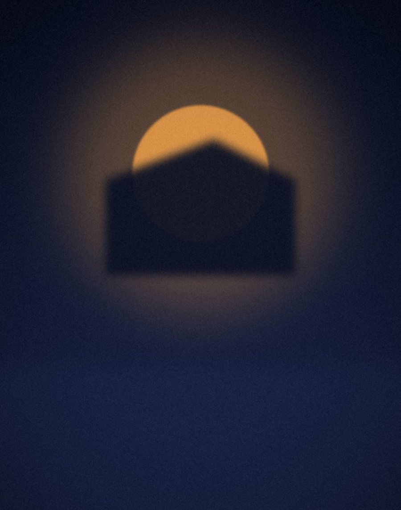
시(詩)
시를 쓰니 나를 안다 시를 써라 나무를 만난다 시를 먹으니 새와 친구 시를 읽으니 별을 가슴에 품고 시를 만나니 사람이 보이고 시를 생각하니 친구가 내가 되고 시를 엮어 가니 창조주의 음성 듣네 시를 외우니 경건해지고 시를 적으니 인생길 곧아지네 시를 떠올리니 벌써 먼나라 가 있고 시를 새기니 내 길 보이네 시의 위대함이여! 하나님은 언어를 만드시고 창조주는 글을 제작하시고 인간에게 시를 선물로 주셨네 오! 감사하고 놀라워라 우리 하나님은 시인이시라
2012년 8월 3일(금) 광은기도원에서 시를 쓰면서 시의 위대함이 느껴져서 적어 보았다.
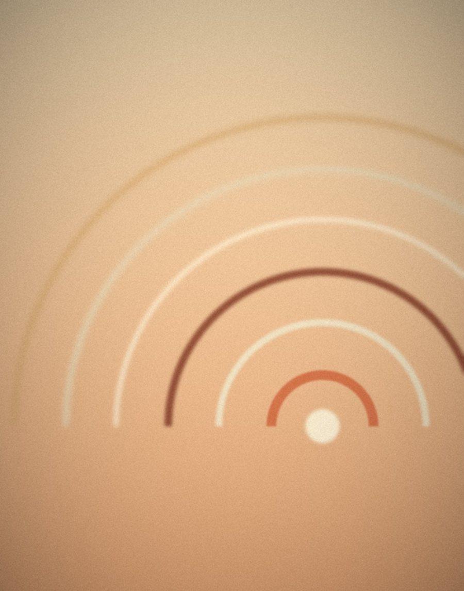
달 가린 솔
휘영청 보름 달 풍만키도 하여라 붉은 달 빛 가린 솔 얄밉도다 붉은 빛 달 손바닥으로 가릴 수 있다니 참 아쉽기도 하여라
우주의 오묘함이 손바닥 편견으로 막다니 하늘 사랑 비 우산 하나 펴 비껴가게 하니 하나님의 큰 사랑 동전 하나로 눈 가리고 주님의 광대하심 손톱 하나로 귀 막으니
달 가린 솔 이젠 살며시 등 뒤로 손 하나님 가린 손 이젠 겸손히 양 무릎에 내려보렴
2012년 8월 3일(금) 밤 하늘에 달을 기리고 있는 솔을 보며 우리가 하나님의 큰 능력을 우리의 작은 손으로 가리고 있는 모습을 보는 듯해서 적어 보았다.
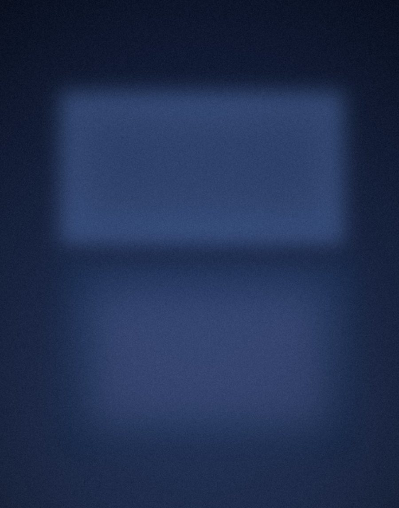
왜?
한 계절 하루 가듯 일 년이 나흘이네 이토록 빠른 세월을 사는 이들 왜 인생이 뭐냐고 묻지 않느냐
새벽별, 북두칠성 시종(始終)이 없는 우주 줄지어 부지런떠는 개미 보며 왜 너 생각해 보지 않느냐
너 작은 인생아 니 뭐 할수 있다 뽐내느뇨 사지 가진 직립동물 평생 부리런 떨며 뭘 할 수 있느뇨 얹혀사는 땅 하나 더 만들꼬 달을 따서 지구 위에 얹어 눈사람 만들고
우주, 별, 지구, 비행기, 너 그 큰 무엇 앞에 겸손하지 않느뇨 내 속에 우주, 우주 속의 나를 만든이 앞에 왜 절하지 않느뇨 내 속의 우주 보니 볼 수 없던이 우주 속의 내가 보이니 조물주가 내 안에 오셨네